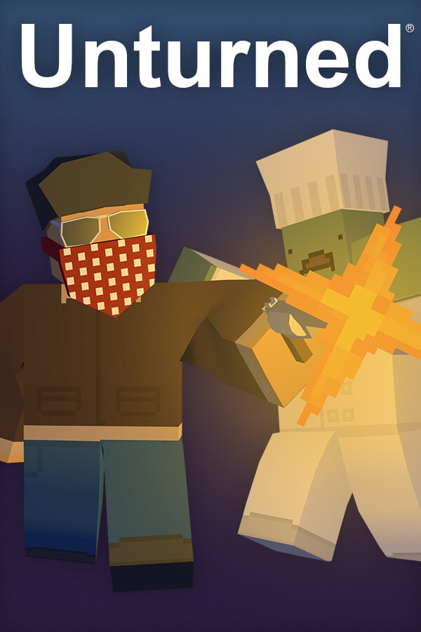

Unturned
Unturned
Details
|  | |
| Playtime | 2h 25m 0s |
| Last Activity | 24.08.2021 18:08:24 |
| Added | 24.08.2021 |
| Modified | 26.12.2023 23:12:40 |
| Completion Status | Played |
| Library | Steam |
| Source | Steam |
| Platform | Macintosh PC (Linux) PC (Windows) |
| Release Date | 07.07.2017 |
| Community Score | 91 |
| Critic Score | |
| User Score | |
| Genre | Akcja Free to Play Niezależne Przygodowe Rekreacyjne |
| Developer | Smartly Dressed Games |
| Publisher | Smartly Dressed Games |
| Feature | Achievements Cloud Saves Co-Op In-App Purchases Includes Level Editor LAN Co-Op LAN Pvp Multiplayer NVIDIA Freestyle Online Co-Op Online Pvp Pvp Single Player Stats Valve Anti-Cheat Enabled Workshop |
| Links | Official Steam Wikia Wikipedia Twitch |
| Tag | Akcja FPS Free to Play Jednoosobowe Klimatyczne Kooperacja MMO Niezależne Otwarty świat Perspektywa pierwszej osoby Piaskownica Postapokaliptyczne Przygodowe Rekreacyjne Strzelanka Strzelanka z łupami Survival Wieloosobowe Wytwarzanie Zombie |
Description

POZOSTAŃ NIEODMIENIONYM
Jesteś jedną z osób, które jeszcze nie przemieniły się w zombie. Zachowanie tego stanu rzeczy będzie wyzwaniem.
- Wkrocz do akcji, strzelając do wszystkiego co się rusza, skupiając na sobie uwagę zarówno żywych, jak i martwych.
- Podejdź do sprawy subtelnie, działając skrycie i odwracając uwagę innych.
- Zmierz się z innymi i naucz się kontrować specjalne umiejętności, takie jak m.in. niewidzialność, zianie ogniem czy miotanie piorunami.
PRZETRWAJ W WALCE Z NATURĄ
Jakby zombie nie były wystarczającym problemem!
- Zbieraj dziko rosnące owoce i warzywa.
- Poluj na zwierzęta, by zdobyć ich mięso i skóry lub sam wciel się w zdobycz i ucieknij przed śmiercią.
- Wędkuj ryby... albo i śmieci.
- Siej ziarna i zbieraj plony.
- Szukaj schronienia przed zamieciami i ogrzej się.
ZMIERZ SIĘ Z INNYMI GRACZAMI
Przyjaciel czy wróg, w grze znajdziesz wiele interesujących osób.
- Oślepiaj oraz aresztuj bandytów, nie zabijając ich.
- Walcz przy użyciu każdej możliwej broni - mieczy, karabinów maszynowych lub snajperskich, pocisków, min - czego dusza zapragnie.
- Przebij się przez umocnienia wroga, używając zdalnie aktywowanych ładunków wybuchowych i okradnij ich ze sprzętu.
- Dla czystego aspektu PvP wkrocz na arenę i walcz w trybie każdy na każdego lub wejdź w tryb PvE i współpracuj z innymi w pokoju.
- Serwery roleplay pozwalają graczom na wczucie się w postać i wspólne uczestnictwo w historii.
POMÓŻ NOWEJ SPOŁECZNOŚCI
Nawet jeśli grasz offline lub solo, nie będziesz narzekać na nudę.
- Poznawaj, rozmawiaj oraz handluj z NPC-ami.
- Wykonuj zadania, by pomóc NPC-om i pchnąć fabułę do przodu.
- Odpieraj ataki hord nieumarłych.
- Zabezpieczaj pakunki dostarczane z powietrza.
- Włóż jedną z wielu masek przeciwgazowych, by przemierzać strefy radioaktywne.
WZMOCNIJ SWOJĄ TWIERDZĘ
Stwórz miejsce, w którym na spokojnie odpoczniesz lub którego użyjesz do prowadzenia swojego gangu.
- Używaj barykad, mebli, pułapek, maszyn i wielu innych rzeczy.
- Zabij okna dechami, by przetrwać noc.
- Buduj całkowicie nowe struktury, używając zebranych zasobów.
- Modyfikując swój pojazd, zmień go w mobilną fortecę.
PODRÓŻUJ PRZEZ LĄD, MORZE LUB POWIETRZE
Pełen wachlarz pojazdów zagwarantuje ci transport w wielkim stylu.
- Na lądzie poruszaj się m.in. czołgami, quadami i skuterami śnieżnymi.
- W powietrzu fruwaj helikopterami, hydroplanami oraz myśliwcami bojowymi.
- Po wodzie pływaj skuterami wodnymi oraz poduszkowcami.
- Wymieniaj opony, akumulatory i paliwo.
EKSPLORUJ ROZLEGŁE ŚWIATY
5 oficjalnych map oraz 1 stworzona przez społeczność to mnogość lokacji do zwiedzenia:
- Wyspa Księcia Edwarda
- Jukon
- Waszyngton
- Rosja
- Hawaje
- Niemcy
MODYFIKUJ WSZYSTKO
Od samego początku Unturned był projektowany z myślą o modach.
- Pobieraj zawartość tworzoną przez graczy, taką jak bronie, pojazdy lub nawet całe poziomy.
- Twórz własne mapy, używając wbudowanego edytora. Wszystkie oficjalne mapy zostały stworzone przy użyciu publicznie dostępnych narzędzi i zasobów.
- Twórz wtyczki, używając systemów wbudowanych w grę lub zewnętrznych.
- Namów innych do głosowania na twoje ubrania oraz skórki w Warsztacie Steam, by stały się one w przyszłości częścią gry.
- Połącz siły z innymi twórcami modów i razem stwórzcie aktualizację, która może stać się częścią gry.
BAJERY
Sądzę, że te funkcje są całkiem spoko, ale nie pasują do żadnej innej kategorii. Chciałbym wspomnieć tu o wielu innych rzeczach, ale chcę tu zachować ścisłość:
- Większość obiektów można zniszczyć celem utorowania sobie drogi.
- Aby lepiej wczuć się w świat, możesz używać radia w grze zamiast zewnętrznego programu głosowego, by komunikować się z drużyną. Do wyboru dwie częstotliwości.